Vinaigresque.
A mustard-free vinaigrette mix.
A small pouch of dried herbs, garlic, onion, pepper, salt and a little sugar. Add your own oil and vinegar, shake, and dress the salad the way you like it.
- Simple ingredients.Remarkable salads.
- Good ingredients go further.Your oil, your vinegar.
- Same salad.A more interesting story.
How it works
Mix. Add oil and vinegar. Shake.
About eight servings a pouch.
-
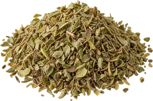
Add the mix
Empty the pouch into a jar or bottle, or take a spoonful for a single salad.
-
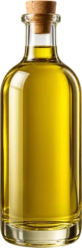
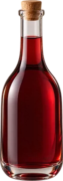
Add oil and vinegar
Three parts oil to one part vinegar. For a whole pouch, that is ¾ cup oil and ¼ cup vinegar. For one salad, 1½ tablespoons oil and ½ tablespoon vinegar.
Extra-virgin olive oil and red wine vinegar is the house pairing. Others below.
-
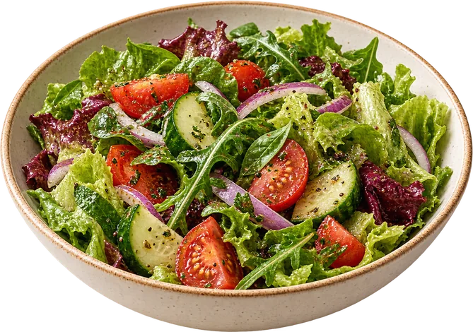
Shake or whisk
Shake until it comes together, then dress the salad. It separates again as it sits, so shake it before each pour.
Why mustard-free
Absent, not merely quiet.
Mustard is in most vinaigrettes, and in Canada it is a priority food allergen, one that has to be named on the label. The idea behind Vinaigresque, after its creator’s own bad reaction, was a vinaigrette in which mustard is absent rather than merely quiet: not less of it, not a milder kind, none in the recipe at all. There is no mustard in it, and there never was.
Most vinaigrettes lean on mustard. It holds the oil and vinegar together and it carries a lot of the flavor, which is why so many dressings taste faintly of the same thing.
Vinaigresque leaves it out, so the dressing tastes like the oil and vinegar you chose. Nothing holds it together, which is why it is made fresh and shaken before serving. That is the whole trick. It is a pantry mix, not a bottled dressing.
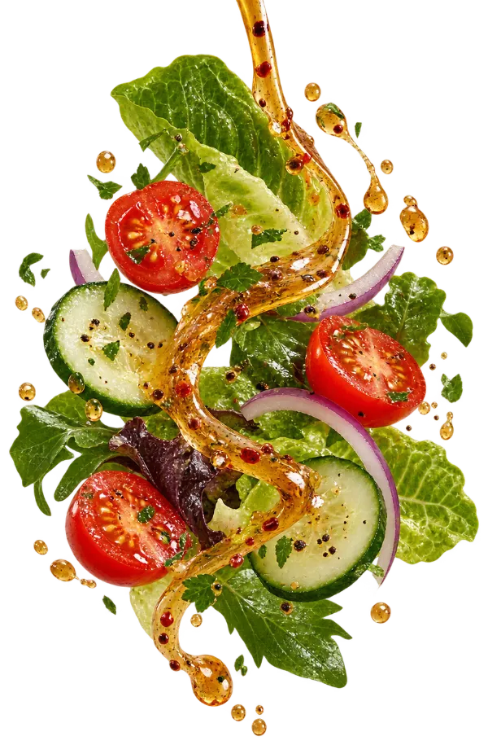
- Oregano
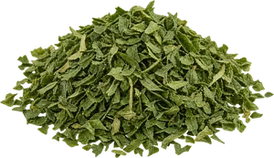
Parsley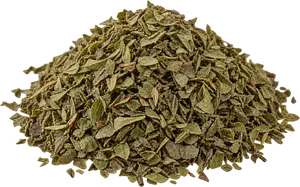
Basil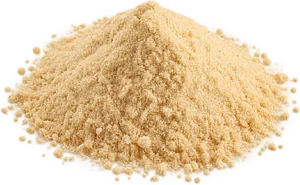
Garlic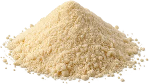
Onion- Black pepper
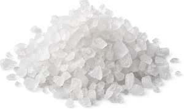
Salt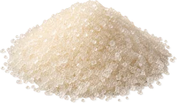
A little sugar
Flavors
Classic first. The rest are in development.
-
The base blend
Classic Italian Herb
Herbal, garlicky, familiar.
Pair with red wine vinegar and olive oil.
-
In development
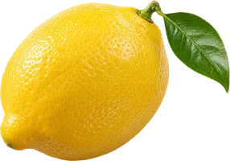
Lemon Herb
Bright, clean, lighter.
Pair with white wine or champagne vinegar and a mild olive oil.
-
In development
Garlic & Herb
More savory, garlic-forward.
Pair with red wine vinegar and a robust olive oil.
-
In development
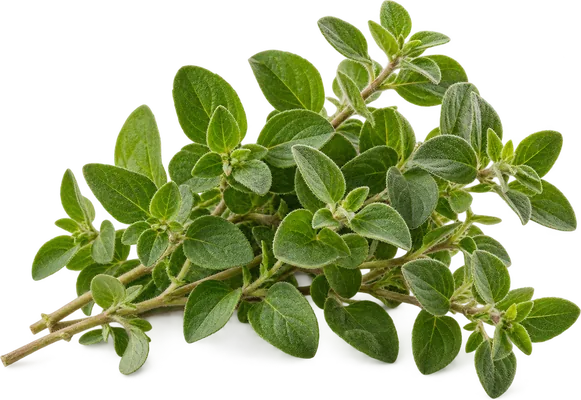
Greek Herb
Oregano-forward, lemony, greener.
Pair with red or white wine vinegar and olive oil.
-
In development
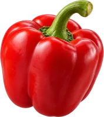
Roasted Red Pepper
Sweet pepper, garlic, herbs.
Pair with red wine or sherry vinegar and olive oil.
-
In development
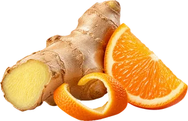
Ginger Citrus
Light citrus-ginger.
Pair with rice vinegar and a neutral or mild olive oil.
Oil and vinegar
Pair. Make it yours.
The pouch stays the same. The vinegar you reach for is what changes the dressing, and the oil follows the vinegar.
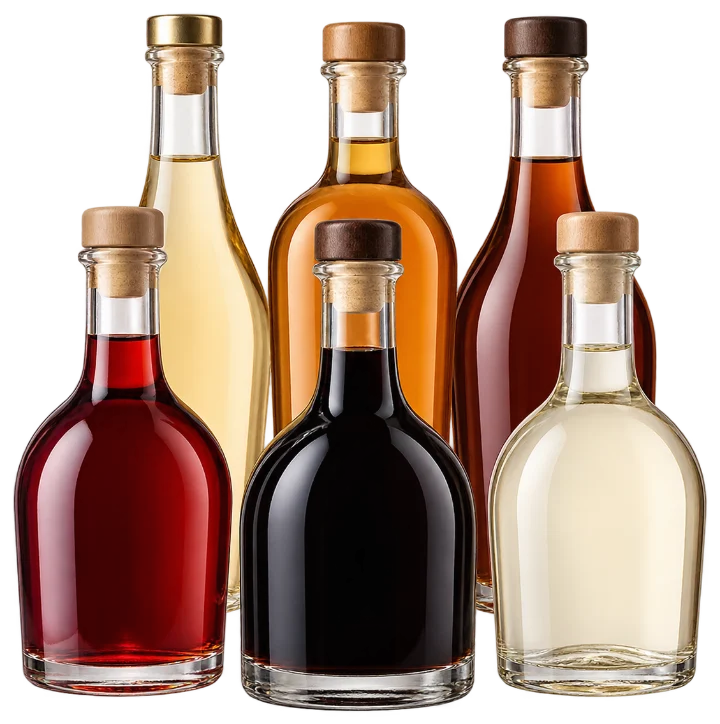
| Vinegar | What it does | Oil to use |
|---|---|---|
| Red wine | Classic, robust. | Extra-virgin olive oil. |
| White wine or champagne | Lighter, brighter. | A mild olive oil. |
| Balsamic | Sweeter, darker, richer. | Extra-virgin olive oil. |
| Apple cider | Fruitier, rounder. | A mild olive oil, or avocado oil. |
| Sherry | Nutty, savory, complex. | Extra-virgin olive oil. |
| Rice | Clean and light. | A neutral oil, or a mild olive oil. |
Under development
Not on shelves yet.
Vinaigresque is being made in small batches while the recipe and the pouch are finished. There is nothing to sign up for yet.